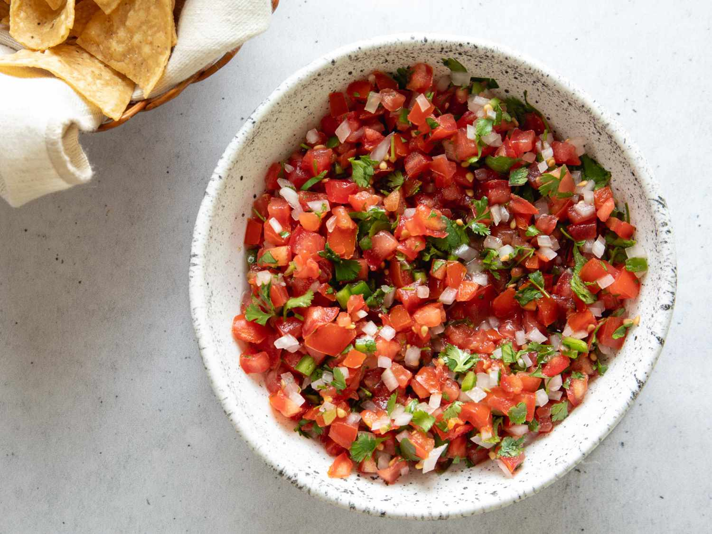

Pico De Gallo Recipe Recipe

The end product!
TThe secret to this recipe is the use of white wine vinegar, which brings some extra refreshing zestiness to your salsa.
The best part is that you get to eat what you make!
Ingredients
- 7 tomatoes
- 1 lime
- 4 cloves of garlic
- 1 red onion
- Fresh parsley or fresh coriander
- Fresh chilies
- Olive oil
- Salt
- Freshly ground black pepper
- White wine vinegar
Steps:
- Core your tomatoes so that only the outer shell is remaining. Make sure you get all the seeds out.
- Dice the tomatoes into small pieces.
- Dice the red onion into small pieces.
- Finely dice the garlic. Do not use a garlic press, instead practice your knife skills.
- Cut the lime into halfs.
- Shred the parsley into small particles using your knife.
- Slice the chilies into tiny pieces.
- Put the diced tomato, diced red onion, diced garlic, sliced chilies and shredded parsley into a bowl.
- Squeeze the juice of the two halves of lime into the bowl.
- Pour about a table spoon of olive oil into the bowl.
- Pour two teaspoons of white wine vinegar into the bowl.
- Add about a teaspoon of salt into the bowl, and grind pepper to taste into the bowl as well.
- Mix everything up using a spoon.
- Enjoy! I personally enjoy this on chicken tacos.